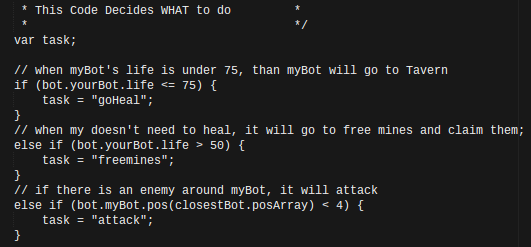

var Bot = require('bot');
var PF = require('pathfinding');
var bot = new Bot('6uw0y45f', 'training', 'http://vindinium.org'); //Put your bot's code here and change training to Arena when you want to fight others.
//var bot = new Bot('lqeqkjvb', 'arena', 'http://52.39.33.197:9000'); //Put your bot's code here and change training to Arena when you want to fight others.
var goDir;
var Promise = require('bluebird');
Bot.prototype.botBrain = function() {
return new Promise(function(resolve, reject) {
_this = bot;
//////* Write your bot below Here *//////
//////* Set `myDir` in the direction you want to go and then bot.goDir is set to myDir at the bottom *////////
/* *
* This Code is global data! *
* */
// Set myDir to what you want and it will set bot.goDir to that direction at the end. Unless it is "none"
var myDir;
var myPos = [bot.yourBot.pos.x, bot.yourBot.pos.y];
var enemyBots = [];
if (bot.yourBot.id != 1) enemyBots.push(bot.bot1);
if (bot.yourBot.id != 2) enemyBots.push(bot.bot2);
if (bot.yourBot.id != 3) enemyBots.push(bot.bot3);
if (bot.yourBot.id != 4) enemyBots.push(bot.bot4);
var closestBot = enemyBots[0];
for (i = 0; i < enemyBots.length; i++) {
if (bot.findDistance(myPos, [closestBot.pos.x, closestBot.pos.y]) > bot.findDistance(myPos, [enemyBots[i].pos.x, enemyBots[i].pos.y])) {
closestBot = enemyBots[i];
}
}
/* *
* This Code Decides WHAT to do *
* */
var task;
// when myBot's life is under 75, than myBot will go to Tavern
if (bot.yourBot.life <= 75) {
task = "goHeal";
}
// when my doesn't need to heal, it will go to free mines and claim them;
else if (bot.yourBot.life > 50) {
task = "freemines";
}
// if there is an enemy around myBot, it will attack
else if (bot.myBot.pos(closestBot.posArray) < 4) {
task = "attack";
}
/* *
* This Code Determines HOW to do it *
* */
// This Code find the nearest freemine and sets myDir toward that direction //
if (task === "freemines") {
var closestMine = bot.freeMines[0];
for (i = 0; i < bot.freeMines.length; i++) {
if (bot.findDistance(myPos, closestMine) > bot.findDistance(myPos, bot.freeMines[i])) {
closestMine = bot.freeMines[i];
}
}
console.log("Claiming a Free Mine!");
myDir = bot.findPath(myPos, closestMine);
}
// This code will find the nearest Tavern, when life is under 75, and will set myDir toward closestTavern
if (task === "goHeal") {
var closestTavern = bot.taverns[0];
for (i = 0; i < bot.taverns.length; i++) {
if (bot.findDistance(myPos, closestTavern) > bot.findDistance(myPos, bot.taverns[i])) {
closestTavern = bot.taverns[i];
}
}
console.log("Going to Tavern");
myDir = bot.findPath(myPos, closestTavern);
}
//When there is a enemy bot next to myBot, than myBot will attack
if (task === "attack") {
console.log('attack');
myDir = bot.findPath(myPos, [closestBot.pos.x, closestBot.pos.y]);
}
/* *
* This Code Sets your direction based on myDir. If you are trying to go to a place that you can't reach, you move randomly. *
* Otherwise you move in the direction set by your code. Feel free to change this code if you want. */
if (myDir === "none") {
console.log("Going Random!");
var rand = Math.floor(Math.random() * 4);
var dirs = ["north", "south", "east", "west"];
bot.goDir = dirs[rand];
}
else {
bot.goDir = myDir;
}
///////////* DON'T REMOVE ANTYTHING BELOW THIS LINE *//////////////
resolve();
});
};
bot.runGame();
// /*var enemyMines = enemybots [0].mines;
// enemyMines = enemyMines.concat(enemyBots[1].mines);
// you use the equal sign for enemyMines = enemyMines.concat to modify the original in this case enemyBots.
// concat just sticks enemybots and mines together (to stick the code end to end)
Well Vindinium is a four player artificial intelligence programming game which allows players to make a bot that is designed to- a. Fight Other Bots (basically attack) b. Go to Taverns (to heal your bot since you are given life points) c. Take over Free Mines (to gain gold). You play it by programming your bot to do the actions mentioned above (and more) by using if else statements etc. Once you do so, your bot will then compete with the other three enemy bots playing the game to see who can collect the most gold. Your bot is allotted a certain amount of moves that can be taken (each move takes away life), before they must go to a tavern and heal or just die and regenerate. By carefully planning what code you will use, your bot will battle against enemy bots that may attack or steal your mines.
As said above, there are three simple tasks that are necessary for your bot to be able to perform. The first one is having your bot be able to heal itself, which is the first if statement. This is necessary because other bots will most likely attack your bot throughout the game and sooner or later your bot will lose life each time it makes a move. I was very worried about my bot dying, so I set 75 being the lowest amount of life to reset my bots direction to a tavern. So when his life is equal to or less than 75, so when this statement is true the code will be run and the task (“goHeal”) will be performed. If not, the next else if statement below will be checked and if true, it will be ran.
If my bot is above 75 life, it will then perform the task (“freemines”) claiming the closest free mine. The else if statement will be checked to see if it is true and if the bots life is above 50 then my bot will claim closest mine. My bot will continue to mine, until its life is equal to or below 75 or if there is a bot that is close to my bot’s position.
That moves us to the last task (“attack”). This task will protect my bot and inflict damage on enemy bots (which will help you kill off the enemy, leaving their previously claimed mines free). I didn’t want my bot to just find other bots with lower life and attack them, I only wanted my bot to attack when enemy bots were close so I set my bot to attack only when an enemy bot was attacking me and was close to me. One thing to remember is that when my bot reaches life of 75 (which will happen quite often and quickly), it will abandon attack mode and will head to nearest tavern. If the bot you were fighting so happens to have a code that tells it to always fight closest bot and that was its priority, than my bot will be 6 feet under in no time.
The code above tells you how to do the 3 tasks (attack, heal, and claim). You will have to set the if statement’s tasks equal to the same task name you gave your tasks in the what to do section in your code (basically just use the same string name in previously created). To be able to perform all these functions, you will have to identify where my bot is throughout the game so that it can determine the best possible move to achieve victory.
After writing code for what to do and how to do it, you will see that your code block is very important and will find your bots location and will find the closest mines, bots, and taverns. A variable will be used to hold the location to the nearest of those three options and will calculate the distance and will compare the distance to everything on the map to see which is the closest of all options. All of this will be run in different for loops which will see which options are a possibility and the option that is best will be found in the array followed by the if statement being ran. After it is decided where your bot shall go, the console.log will direct my bot to that location.
My bot somewhat did what I wanted it to do. It went to taverns when it was low on health and it claimed mines quite easily, but sadly lost them to enemy bots when they stole my mine. I did win a few games, which was very unexpected. I learned a lot from this project and my view of AI has changes. When I first thought of AI, I would think of those crazy sci fi movies where robots would kill everyone and take over the world. Now I think of technology that can make actions/movements on its own based off of the basic code you set for it. It was just a really cool game that led to many arguments and good memories.